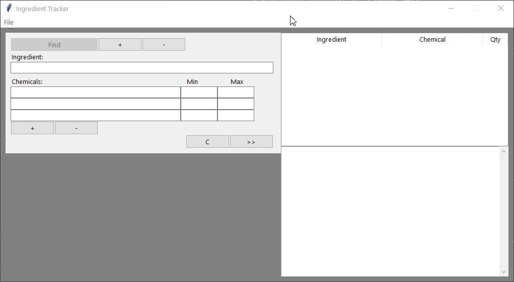
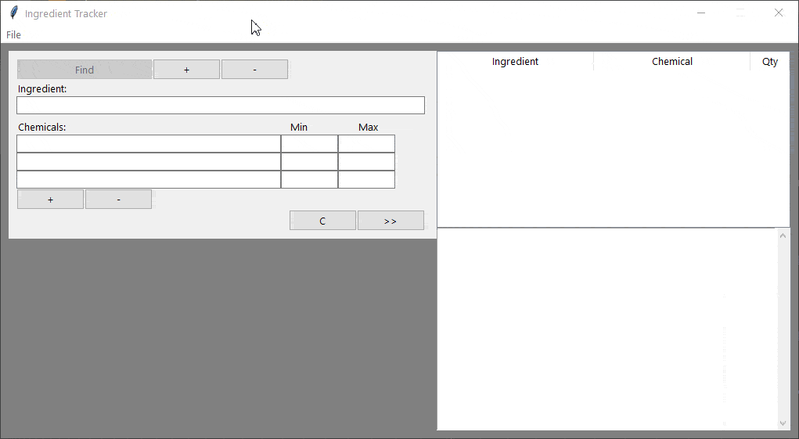

Ingredient Tracker

Techs Demonstrated
- Python
- Git
Project Summary
Primarily this project served as a personal python challenge (and challenging it was!). But it also needed a practical reason to exist. So the decision was made to create a personal database system to store some gameplay info regarding my Skyrim sessions.
The Problem: I play a heavily modded version of Skyrim, and within this version of the game exists a complex new alchemy system that exists underneath the original (Here's the mod, in case you're curious: Spell Research Mod). This new system encourages the player to breakdown the preexisting ingredients into base chemicals, and then rebuild new elixiers from the base chemicals. But unfortunately, this new system doesn't provide the player a history of previous ingredient breakdowns, so it's often forgotten which ingredients yield which chemicals.
The Solution: So, instead of continuing to manually update and reference a notepad file to recall previous discoveries (or spoil the fun by referencing the mod's documentation for all ingredient compositions), I instead created this application. It tracks all provided ingredients , allows querying the data with/without filters, and is also capable of writing and reading database files (.csv) to keep data persistent. It even has a dedicated GUI!
Features
Core Database Fuctionality
Ingredients can be added, removed, edited, and queried. Queries may be built with the following fields:
- Using the ingredient's name
- Using any possible existing chemical(s)
- Specifying the desired Min/Max chemical quantity (optional)
The results are always displayed in alphabetical order, and the stored data is case insensitive. Inputs also undergo validation before opertaions are performed.
Reading/Writing Data Files
A database app would be pretty useless if it lacked a means of saving its data. Files may be imported and exported from this application, and the parsing of files is robust. The app ignores poorly formatted imports, and it also ignores any existing bad data it finds within a properly formatted import. Ultimately, the app doesn't consume bad data from files.
Dedicated GUI
The GUI is simple and easy to learn. Buttons are disabled when out of context, input rows may be added or removed for narrower/wider queries, and actions are logged in an output diplay for clarity.
It won't brew your tea though, unfortunately.